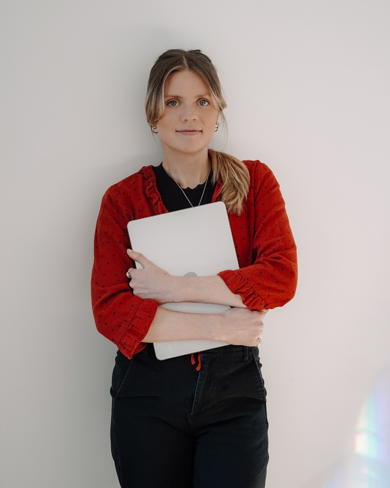
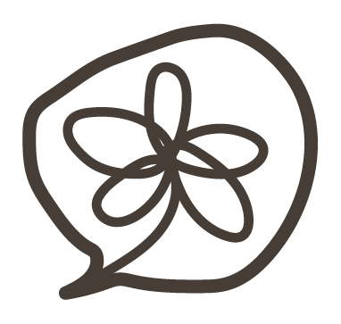

Saint-Basile-le-Grand, Québec
J'aide les organisations québécoises à clarifier leur positionnement, orchestrer leurs campagnes et livrer des projets marketing qui ont un vrai impact.
Pas de formules toutes faites. Chaque mandat est conçu sur mesure, avec une vision claire et un plan d'action concret.
Ce que je fais
Positionnement de marque, stratégie de contenu ou mise en oeuvre d'un plan stratégique annuel aligné sur vos objectifs d'affaires.
→Gestion de projet comme un rebranding ou une refonte de site web. Je m'occupe de la planification à la livraison, dans les délais et le budget.
→Création et optimisation de campagnes Meta Ads : ciblage précis, concepts créatifs percutants et suivi de performance en continu.
→
Stratège en marketing et communications depuis 8 ans, j'ai une profonde passion pour les messages à impact et les concepts qui connectent réellement avec les gens.
J'aime créer des stratégies authentiques qui allient créativité, clarté et pertinence, afin de bâtir des marques fortes et humaines. Basée à Saint-Basile-le-Grand, je travaille avec des entreprises et OBNL à travers tout le Québec.
Je porte plusieurs chapeaux parce que sinon je trouverais la vie ennuyante. En dehors d'être stratège, je suis maman de jumeaux 👶🏻👶🏻 et prof de yoga 🧘♀️. Disons que j'ai une vie remplie!
Je travaille de façon structurée et transparente. Vous savez toujours où en est votre projet.
On prend le temps de comprendre vos enjeux, votre clientèle cible et ce qui vous différencie de la concurrence.
Je construis un plan d'action adapté à votre réalité, vos ressources et vos ambitions sans que ce soit compliqué.
Mise en œuvre rigoureuse, coordination des parties prenantes et ajustements en temps réel selon les résultats.
Analyse des résultats, documentation des apprentissages et recommandations pour la prochaine phase.
"J'ai eu le plaisir de travailler avec Cassandre. C'est une collègue créative, investie dans ses projets et toujours à l'affût des nouveautés et des possibilités d'amélioration. Elle fait preuve d'un enthousiasme contagieux qui rejaillit sur le reste de l'équipe et elle incarne des valeurs de bienveillance au travail. Pour toutes ces raisons, Cassandre est un atout à avoir dans une équipe pour sa compétence et ses qualités humaines."
"Cassandre s'est jointe à notre équipe en tant que stratège marketing il y a environ un an. Elle a beaucoup de qualités que je recherchais : méticuleuse, organisée, stratégique, assidue. Elle maîtrise bien le marché, la clientèle cible et demeure à l'écoute de nos besoins. En plus de son efficacité et adaptabilité, sa personnalité est des plus agréable et contagieuse. Je recommanderais ses services à toute entreprise voulant gagner plus de visibilité et augmenter leurs chiffres d'affaires."
"J'ai été très impressionnée par le fait que Cassandre ait pris le temps d'étudier mon site web et mon offre avant notre première rencontre afin de pouvoir me donner des objectifs et des stratégies spécifiques et adaptés à mes besoins uniques. J'ai également apprécié qu'elle ait été en mesure d'atténuer mon anxiété en me donnant des stratégies gérables que je pouvais réaliser par moi-même. Trop hâte de voir les résultats!"
En parallèle de mon travail en marketing, je partage mon savoir expérientiel en lien avec la santé mentale à travers des conférences engagées et authentiques.
Si vous souhaitez m'inviter à prendre la parole lors d'un événement, d'une journée thématique ou dans votre organisation, je vous invite à me contacter par courriel.
Discutons de vos objectifs lors d'un appel découverte gratuit de 20 minutes. Aucun engagement.
Réserver un appel gratuit